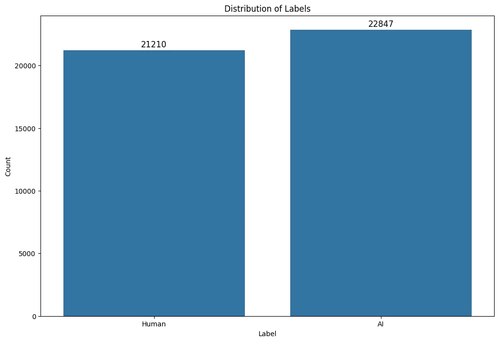
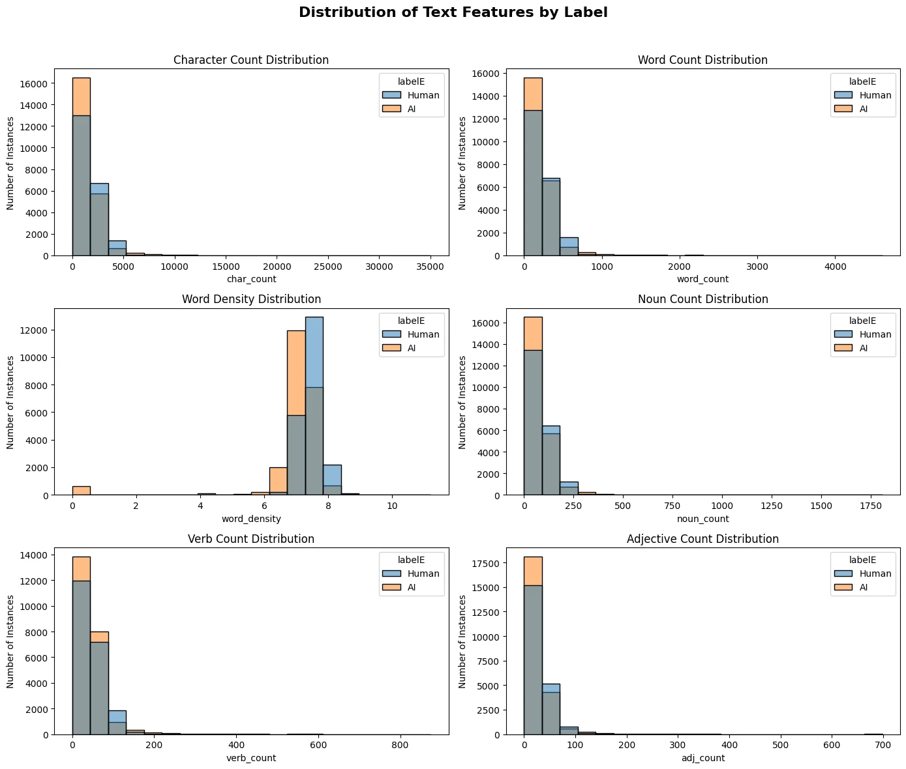
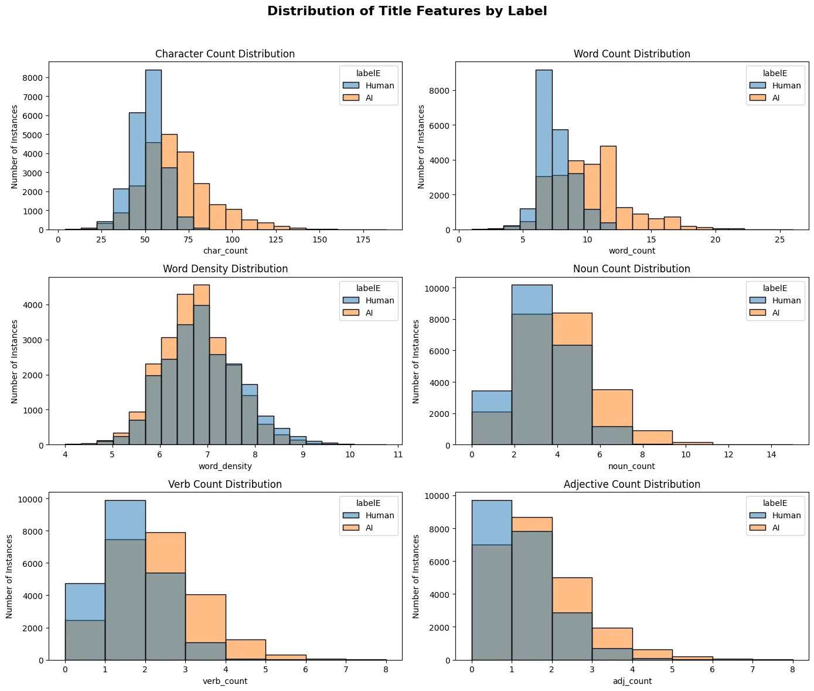
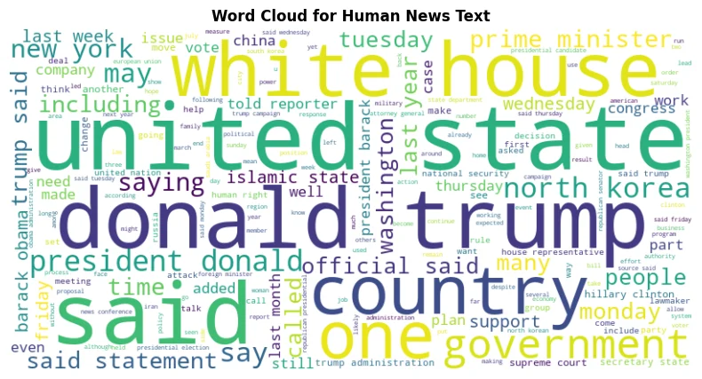
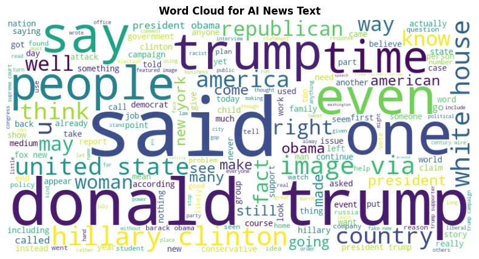
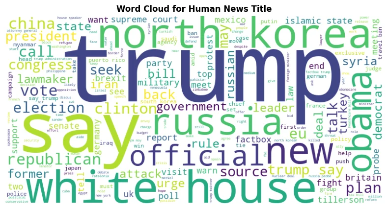
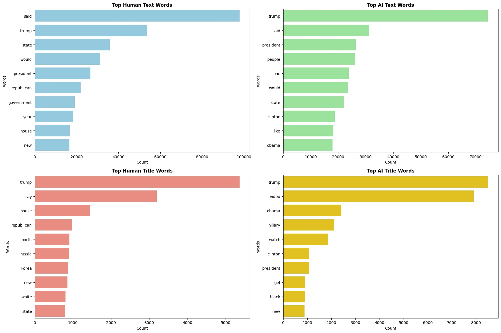
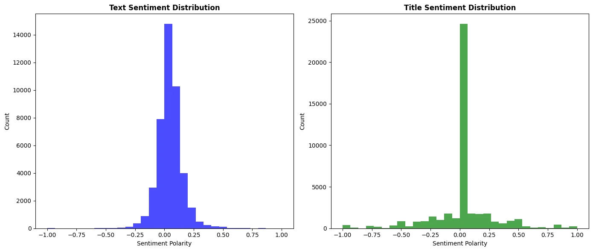
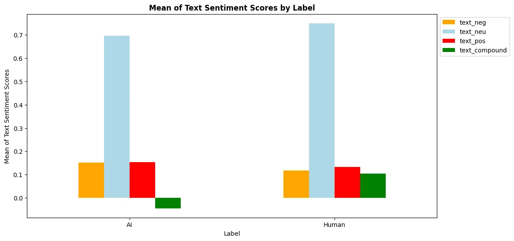
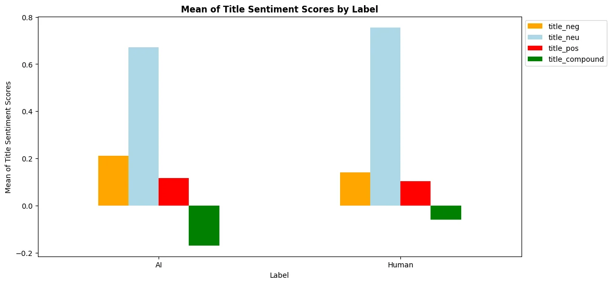

Data analysis / Statistical Testing
Code cell 2
#IMPORTS
import numpy as np
import pandas as pd
import seaborn as sns
%matplotlib inline
import matplotlib.pyplot as plt
import numpy as np
import pandas as pd
import string
import spacy
from collections import Counter
from sklearn.decomposition import LatentDirichletAllocation
from sklearn.ensemble import GradientBoostingClassifier
from sklearn.ensemble import RandomForestClassifier
from sklearn.feature_extraction.text import CountVectorizer
from sklearn.feature_extraction.text import TfidfVectorizer
from sklearn.linear_model import LogisticRegression
from sklearn.metrics import accuracy_score
from sklearn.model_selection import train_test_split
from sklearn.naive_bayes import MultinomialNB
from sklearn.svm import LinearSVC
from nltk.corpus import stopwords
from nltk.tokenize import word_tokenize
from nltk.stem import WordNetLemmatizer
import spacy
from collections import Counter
import re
from spacy.lang.en.stop_words import STOP_WORDS
from wordcloud import WordCloud
import matplotlib.pyplot as plt
from textblob import TextBlob
from nltk.sentiment.vader import SentimentIntensityAnalyzer
import nltk
# Download the VADER lexicon
nltk.download('vader_lexicon')
Text output
True
Initialization / Cleaning
Code cell 4
df_clean = pd.read_csv(r'C:\Users\GGPC\IoD_Mini_Projects\Mini_Project_3\data\raw\Clean.csv')
text_features = pd.read_csv(r'C:\Users\GGPC\IoD_Mini_Projects\Mini_Project_3\data\raw\text_features.csv')
title_features = pd.read_csv(r'C:\Users\GGPC\IoD_Mini_Projects\Mini_Project_3\data\raw\title_features.csv')
Code cell 5
df_clean.head()| Unnamed: 0 | title | text | subject | date | label | clean_title | clean_text | |
|---|---|---|---|---|---|---|---|---|
| 0 | 0 | As U.S. budget fight looms, Republicans flip t... | WASHINGTON (Reuters) - The head of a conservat... | politicsNews | December 31, 2017 | 1 | budget fight loom republican flip fiscal script | washington head conservative republican factio... |
| 1 | 1 | U.S. military to accept transgender recruits o... | WASHINGTON (Reuters) - Transgender people will... | politicsNews | December 29, 2017 | 1 | military accept transgender recruit monday pen... | washington transgender people allowed first ti... |
| 2 | 2 | Senior U.S. Republican senator: 'Let Mr. Muell... | WASHINGTON (Reuters) - The special counsel inv... | politicsNews | December 31, 2017 | 1 | senior republican senator mueller job | washington special counsel investigation link ... |
| 3 | 3 | FBI Russia probe helped by Australian diplomat... | WASHINGTON (Reuters) - Trump campaign adviser ... | politicsNews | December 30, 2017 | 1 | fbi russia probe helped australian diplomat nyt | washington trump campaign adviser george papad... |
| 4 | 4 | Trump wants Postal Service to charge 'much mor... | SEATTLE/WASHINGTON (Reuters) - President Donal... | politicsNews | December 29, 2017 | 1 | trump want postal service charge amazon shipment | president donald trump called postal service f... |
Code cell 6
text_features.head()| Unnamed: 0 | char_count | word_count | word_density | adj_count | adv_count | noun_count | pron_count | propn_count | verb_count | |
|---|---|---|---|---|---|---|---|---|---|---|
| 0 | 0 | 3185.0 | 426.0 | 7.476526 | 53.0 | 17.0 | 162.0 | 0.0 | 99.0 | 82.0 |
| 1 | 1 | 2829.0 | 353.0 | 8.014164 | 35.0 | 7.0 | 132.0 | 1.0 | 71.0 | 92.0 |
| 2 | 2 | 1898.0 | 255.0 | 7.443137 | 27.0 | 3.0 | 97.0 | 3.0 | 62.0 | 50.0 |
| 3 | 3 | 1687.0 | 218.0 | 7.738532 | 25.0 | 8.0 | 71.0 | 0.0 | 63.0 | 43.0 |
| 4 | 4 | 3451.0 | 471.0 | 7.326964 | 72.0 | 16.0 | 218.0 | 0.0 | 69.0 | 75.0 |
Code cell 7
title_features.head()| Unnamed: 0 | char_count | word_count | word_density | adj_count | adv_count | noun_count | pron_count | propn_count | verb_count | |
|---|---|---|---|---|---|---|---|---|---|---|
| 0 | 0 | 47.0 | 7.0 | 6.714286 | 2.0 | 0.0 | 4.0 | 0.0 | 1.0 | 0.0 |
| 1 | 1 | 51.0 | 6.0 | 8.500000 | 0.0 | 0.0 | 3.0 | 0.0 | 2.0 | 1.0 |
| 2 | 2 | 37.0 | 5.0 | 7.400000 | 2.0 | 0.0 | 3.0 | 0.0 | 0.0 | 0.0 |
| 3 | 3 | 47.0 | 7.0 | 6.714286 | 1.0 | 0.0 | 3.0 | 0.0 | 2.0 | 1.0 |
| 4 | 4 | 48.0 | 7.0 | 6.857143 | 1.0 | 0.0 | 5.0 | 0.0 | 0.0 | 1.0 |
Code cell 8
text_features = pd.concat([text_features, df_clean['label']], axis=1)
title_features = pd.concat([title_features, df_clean['label']], axis=1)Code cell 9
text_features| Unnamed: 0 | char_count | word_count | word_density | adj_count | adv_count | noun_count | pron_count | propn_count | verb_count | label | |
|---|---|---|---|---|---|---|---|---|---|---|---|
| 0 | 0 | 3185.0 | 426.0 | 7.476526 | 53.0 | 17.0 | 162.0 | 0.0 | 99.0 | 82.0 | 1 |
| 1 | 1 | 2829.0 | 353.0 | 8.014164 | 35.0 | 7.0 | 132.0 | 1.0 | 71.0 | 92.0 | 1 |
| 2 | 2 | 1898.0 | 255.0 | 7.443137 | 27.0 | 3.0 | 97.0 | 3.0 | 62.0 | 50.0 | 1 |
| 3 | 3 | 1687.0 | 218.0 | 7.738532 | 25.0 | 8.0 | 71.0 | 0.0 | 63.0 | 43.0 | 1 |
| 4 | 4 | 3451.0 | 471.0 | 7.326964 | 72.0 | 16.0 | 218.0 | 0.0 | 69.0 | 75.0 | 1 |
| ... | ... | ... | ... | ... | ... | ... | ... | ... | ... | ... | ... |
| 44684 | 44893 | 2091.0 | 288.0 | 7.260417 | 53.0 | 13.0 | 98.0 | 1.0 | 67.0 | 44.0 | 0 |
| 44685 | 44894 | 1010.0 | 149.0 | 6.778523 | 12.0 | 4.0 | 66.0 | 1.0 | 25.0 | 34.0 | 0 |
| 44686 | 44895 | 15685.0 | 2194.0 | 7.149043 | 357.0 | 119.0 | 698.0 | 17.0 | 515.0 | 364.0 | 0 |
| 44687 | 44896 | 1642.0 | 247.0 | 6.647773 | 34.0 | 6.0 | 78.0 | 7.0 | 59.0 | 48.0 | 0 |
| 44688 | 44897 | 3369.0 | 478.0 | 7.048117 | 65.0 | 15.0 | 150.0 | 0.0 | 131.0 | 97.0 | 0 |
44689 rows × 11 columns
Code cell 10
title_features| Unnamed: 0 | char_count | word_count | word_density | adj_count | adv_count | noun_count | pron_count | propn_count | verb_count | label | |
|---|---|---|---|---|---|---|---|---|---|---|---|
| 0 | 0 | 47.0 | 7.0 | 6.714286 | 2.0 | 0.0 | 4.0 | 0.0 | 1.0 | 0.0 | 1 |
| 1 | 1 | 51.0 | 6.0 | 8.500000 | 0.0 | 0.0 | 3.0 | 0.0 | 2.0 | 1.0 | 1 |
| 2 | 2 | 37.0 | 5.0 | 7.400000 | 2.0 | 0.0 | 3.0 | 0.0 | 0.0 | 0.0 | 1 |
| 3 | 3 | 47.0 | 7.0 | 6.714286 | 1.0 | 0.0 | 3.0 | 0.0 | 2.0 | 1.0 | 1 |
| 4 | 4 | 48.0 | 7.0 | 6.857143 | 1.0 | 0.0 | 5.0 | 0.0 | 0.0 | 1.0 | 1 |
| ... | ... | ... | ... | ... | ... | ... | ... | ... | ... | ... | ... |
| 44684 | 44893 | 53.0 | 9.0 | 5.888889 | 0.0 | 1.0 | 1.0 | 0.0 | 6.0 | 1.0 | 0 |
| 44685 | 44894 | 40.0 | 6.0 | 6.666667 | 0.0 | 0.0 | 3.0 | 0.0 | 2.0 | 1.0 | 0 |
| 44686 | 44895 | 71.0 | 11.0 | 6.454545 | 3.0 | 0.0 | 3.0 | 0.0 | 3.0 | 2.0 | 0 |
| 44687 | 44896 | 50.0 | 8.0 | 6.250000 | 0.0 | 1.0 | 1.0 | 0.0 | 3.0 | 2.0 | 0 |
| 44688 | 44897 | 61.0 | 9.0 | 6.777778 | 3.0 | 0.0 | 3.0 | 0.0 | 2.0 | 1.0 | 0 |
44689 rows × 11 columns
Code cell 11
text_features = text_features.drop(columns=['Unnamed: 0'])
title_features = title_features.drop(columns=['Unnamed: 0'])
df_clean = df_clean.drop(columns=['Unnamed: 0'])Code cell 12
text_features['labelE'] = text_features['label'].map({1: 'Human', 0: 'AI'})
title_features['labelE'] = title_features['label'].map({1: 'Human', 0: 'AI'})
df_clean['labelE'] = df_clean['label'].map({1: 'Human', 0: 'AI'})Code cell 13
print(text_features.dtypes)
Text Features Dist
Code cell 15
df_clean['labelE']Text output
0 Human
1 Human
2 Human
3 Human
4 Human
...
44684 AI
44685 AI
44686 AI
44687 AI
44688 AI
Name: labelE, Length: 44689, dtype: objecttoo many errors in the date column - decided to drop as this is not significant when text classification.
Code cell 17
# df_clean['date'] = df_clean['date'].astype(str)
# # Extract the month and year from the 'date' column using a more robust regex to handle abbreviations
# df_clean['month_year'] = df_clean['date'].str.extract(r'([A-Za-z]{3,9}\s\d{1,2},\s\d{4})')
# # Print a sample of the DataFrame to check the 'month_year' extraction
# print(df_clean[['date', 'month_year']].head(20))
# # Convert the extracted month and year to datetime
# df_clean['month_year'] = pd.to_datetime(df_clean['month_year'], format='%B %d, %Y', errors='coerce')
# df_clean['month_year'].isnull().sum()Code cell 19
df_clean = df_clean.drop(columns=['date'])
df_clean = df_clean.dropna(subset=['clean_text'])
df_clean = df_clean.copy()Code cell 20
df_clean.to_csv(r'C:\Users\GGPC\IoD_Mini_Projects\Mini_Project_3\data\raw\Clean_columns.csv')Code cell 21
df_clean| title | text | subject | label | clean_title | clean_text | labelE | |
|---|---|---|---|---|---|---|---|
| 0 | As U.S. budget fight looms, Republicans flip t... | WASHINGTON (Reuters) - The head of a conservat... | politicsNews | 1 | budget fight loom republican flip fiscal script | washington head conservative republican factio... | Human |
| 1 | U.S. military to accept transgender recruits o... | WASHINGTON (Reuters) - Transgender people will... | politicsNews | 1 | military accept transgender recruit monday pen... | washington transgender people allowed first ti... | Human |
| 2 | Senior U.S. Republican senator: 'Let Mr. Muell... | WASHINGTON (Reuters) - The special counsel inv... | politicsNews | 1 | senior republican senator mueller job | washington special counsel investigation link ... | Human |
| 3 | FBI Russia probe helped by Australian diplomat... | WASHINGTON (Reuters) - Trump campaign adviser ... | politicsNews | 1 | fbi russia probe helped australian diplomat nyt | washington trump campaign adviser george papad... | Human |
| 4 | Trump wants Postal Service to charge 'much mor... | SEATTLE/WASHINGTON (Reuters) - President Donal... | politicsNews | 1 | trump want postal service charge amazon shipment | president donald trump called postal service f... | Human |
| ... | ... | ... | ... | ... | ... | ... | ... |
| 44684 | McPain: John McCain Furious That Iran Treated ... | 21st Century Wire says As 21WIRE reported earl... | Middle-east | 0 | mcpain john mccain furious iran treated u sail... | century wire say reported earlier week unlikel... | AI |
| 44685 | JUSTICE? Yahoo Settles E-mail Privacy Class-ac... | 21st Century Wire says It s a familiar theme. ... | Middle-east | 0 | justice yahoo settle privacy lawyer user | century wire say familiar theme whenever dispu... | AI |
| 44686 | Sunnistan: US and Allied ‘Safe Zone’ Plan to T... | Patrick Henningsen 21st Century WireRemember ... | Middle-east | 0 | sunnistan u allied safe zone plan take territo... | patrick henningsen century wireremember obama ... | AI |
| 44687 | How to Blow $700 Million: Al Jazeera America F... | 21st Century Wire says Al Jazeera America will... | Middle-east | 0 | blow million al jazeera america finally call q... | century wire say al jazeera america go history... | AI |
| 44688 | 10 U.S. Navy Sailors Held by Iranian Military ... | 21st Century Wire says As 21WIRE predicted in ... | Middle-east | 0 | navy sailor held iranian military sign neocon ... | century wire say predicted new year look ahead... | AI |
44057 rows × 7 columns
EDA
Code cell 23
plt.figure(figsize=(12, 8))
ax = sns.countplot(data=df_clean, x='labelE')
plt.title('Distribution of Labels')
plt.xlabel('Label')
plt.ylabel('Count')
for p in ax.patches:
ax.annotate(f'{int(p.get_height())}', (p.get_x() + p.get_width() / 2., p.get_height()),
ha='center', va='baseline', fontsize=12, color='black', xytext=(0, 5),
textcoords='offset points')
plt.show()
Code cell 24
# Plot distribution of text features
fig, axes = plt.subplots(3, 2, figsize=(14, 12))
sns.histplot(ax=axes[0, 0], data=text_features, x='char_count', hue='labelE', bins=20)
axes[0, 0].set_title('Character Count Distribution')
axes[0, 0].set_ylabel('Number of Instances')
sns.histplot(ax=axes[0, 1], data=text_features, x='word_count', hue='labelE', bins=20)
axes[0, 1].set_title('Word Count Distribution')
axes[0, 1].set_ylabel('Number of Instances')
sns.histplot(ax=axes[1, 0], data=text_features, x='word_density', hue='labelE', bins=20)
axes[1, 0].set_title('Word Density Distribution')
axes[1, 0].set_ylabel('Number of Instances')
sns.histplot(ax=axes[1, 1], data=text_features, x='noun_count', hue='labelE', bins=20)
axes[1, 1].set_title('Noun Count Distribution')
axes[1, 1].set_ylabel('Number of Instances')
sns.histplot(ax=axes[2, 0], data=text_features, x='verb_count', hue='labelE', bins=20)
axes[2, 0].set_title('Verb Count Distribution')
axes[2, 0].set_ylabel('Number of Instances')
sns.histplot(ax=axes[2, 1], data=text_features, x='adj_count', hue='labelE', bins=20)
axes[2, 1].set_title('Adjective Count Distribution')
axes[2, 1].set_ylabel('Number of Instances')
fig.suptitle('Distribution of Text Features by Label', fontsize=16, fontweight='bold')
plt.tight_layout(rect=[0, 0, 1, 0.96])
plt.show()

Code cell 25
fig, axes = plt.subplots(3, 2, figsize=(14, 12))
sns.histplot(ax=axes[0, 0], data=title_features, x='char_count', hue='labelE', bins=20)
axes[0, 0].set_title('Character Count Distribution')
axes[0, 0].set_ylabel('Number of Instances')
sns.histplot(ax=axes[0, 1], data=title_features, x='word_count', hue='labelE', bins=20)
axes[0, 1].set_title('Word Count Distribution')
axes[0, 1].set_ylabel('Number of Instances')
sns.histplot(ax=axes[1, 0], data=title_features, x='word_density', hue='labelE', bins=20)
axes[1, 0].set_title('Word Density Distribution')
axes[1, 0].set_ylabel('Number of Instances')
sns.histplot(ax=axes[1, 1], data=title_features, x='noun_count', hue='labelE', bins=8)
axes[1, 1].set_title('Noun Count Distribution')
axes[1, 1].set_ylabel('Number of Instances')
sns.histplot(ax=axes[2, 0], data=title_features, x='verb_count', hue='labelE', bins=8)
axes[2, 0].set_title('Verb Count Distribution')
axes[2, 0].set_ylabel('Number of Instances')
sns.histplot(ax=axes[2, 1], data=title_features, x='adj_count', hue='labelE', bins=8)
axes[2, 1].set_title('Adjective Count Distribution')
axes[2, 1].set_ylabel('Number of Instances')
fig.suptitle('Distribution of Title Features by Label', fontsize=16, fontweight='bold')
plt.tight_layout(rect=[0, 0, 1, 0.96])
plt.show()

Noun Count Distribution
Interpretation: Human-generated text may use more specific and varied nouns, contributing to the richness of the content.
Verb Count Distribution
Interpretation: Human text might be more action-oriented and descriptive, using verbs to convey more dynamic content.
Adjective Count Distribution
Interpretation: The use of adjectives in human text suggests a tendency to provide more descriptive and nuanced information.
Character Count Distribution
Interpretation: human-generated text is generally longer and more detailed than AI-generated text.
Word Count Distribution
Interpretation: Human text may be using more words per sentence, possibly indicating more complex sentence structures.
Code cell 27
df_clean['clean_text'] = df_clean['clean_text'].astype(str)
df_clean['clean_title'] = df_clean['clean_title'].astype(str)Code cell 28
true_text_words = ' '.join(df_clean[df_clean['label'] == 1]['clean_text'])
fake_text_words = ' '.join(df_clean[df_clean['label'] == 0]['clean_text'])
true_title_words = ' '.join(df_clean[df_clean['label'] == 1]['clean_title'])
fake_title_words = ' '.join(df_clean[df_clean['label'] == 0]['clean_title'])Code cell 29
true_text_wordcloud = WordCloud(width=800, height=400, background_color='white').generate(true_text_words)
fake_text_wordcloud = WordCloud(width=800, height=400, background_color='white').generate(fake_text_words)
true_title_wordcloud = WordCloud(width=800, height=400, background_color='white').generate(true_title_words)
fake_title_wordcloud = WordCloud(width=800, height=400, background_color='white').generate(fake_title_words)
plt.figure(figsize=(10, 5))
plt.imshow(true_text_wordcloud, interpolation='bilinear')
plt.title('Word Cloud for Human News Text', fontweight='bold')
plt.axis('off')
plt.show()
plt.figure(figsize=(10, 5))
plt.imshow(fake_text_wordcloud, interpolation='bilinear')
plt.title('Word Cloud for AI News Text', fontweight='bold')
plt.axis('off')
plt.show()
plt.figure(figsize=(10, 5))
plt.imshow(true_title_wordcloud, interpolation='bilinear')
plt.title('Word Cloud for Human News Title', fontweight='bold')
plt.axis('off')
plt.show()
plt.figure(figsize=(10, 5))
plt.imshow(fake_title_wordcloud, interpolation='bilinear')
plt.title('Word Cloud for AI News Title', fontweight='bold')
plt.axis('off')
plt.show()



Code cell 30
from collections import Counter
human_text_list = true_text_words.split()
ai_text_list = fake_text_words.split()
human_title_list = true_title_words.split()
ai_title_list = fake_title_words.split()
human_text_words = Counter(human_text_list)
ai_text_words = Counter(ai_text_list)
human_title_words = Counter(human_title_list)
ai_title_words = Counter(ai_title_list)
top_human_text_words = human_text_words.most_common(10)
top_ai_text_words = ai_text_words.most_common(10)
top_human_title_words = human_title_words.most_common(10)
top_ai_title_words = ai_title_words.most_common(10)
print(f'Top Human Text Words: {top_human_text_words}')
print(f'Top AI Text Words: {top_ai_text_words}')
print(f'Top Human Title Words: {top_human_title_words}')
print(f'Top AI Title Words: {top_ai_title_words}')
Code cell 31
h_t_word, h_t_count = zip(*top_human_text_words)
a_t_word, a_t_count = zip(*top_ai_text_words)
h_tt_word, h_tt_count = zip(*top_human_title_words)
a_tt_word, a_tt_count = zip(*top_ai_title_words)
fig, axs = plt.subplots(2, 2, figsize=(18, 12))
# Human Text Words
sns.barplot(x=list(h_t_count), y=list(h_t_word), color='skyblue', ax=axs[0, 0])
axs[0, 0].set_title('Top Human Text Words', fontweight='bold')
axs[0, 0].set_xlabel('Count')
axs[0, 0].set_ylabel('Words')
# AI Text Words
sns.barplot(x=list(a_t_count), y=list(a_t_word), color='lightgreen', ax=axs[0, 1])
axs[0, 1].set_title('Top AI Text Words', fontweight='bold')
axs[0, 1].set_xlabel('Count')
axs[0, 1].set_ylabel('Words')
# Human Title Words
sns.barplot(x=list(h_tt_count), y=list(h_tt_word), color='salmon', ax=axs[1, 0])
axs[1, 0].set_title('Top Human Title Words', fontweight='bold')
axs[1, 0].set_xlabel('Count')
axs[1, 0].set_ylabel('Words')
# AI Title Words
sns.barplot(x=list(a_tt_count), y=list(a_tt_word), color='gold', ax=axs[1, 1])
axs[1, 1].set_title('Top AI Title Words', fontweight='bold')
axs[1, 1].set_xlabel('Count')
axs[1, 1].set_ylabel('Words')
plt.tight_layout()
plt.show()

Human Text Words
Top Words: "said," "trump," "state," "would," "president," "republican," "government," "year," "house," "new"
Observation:The most frequent words in human-generated news text are related to political figures and institutions, with "said" being the most common word, indicating a focus on quoting sources and reporting statements.
AI Text Words
Top Words: "trump," "said," "president," "people," "one," "would," "state," "clinton," "like," "obama"
Observation: AI-generated news text also frequently mentions political figures but includes more general terms like "people" and "one," suggesting a broader and more generalized approach to news content.
Human Title Words
Top Words: "trump," "say," "house," "republican," "north," "russia," "korea," "new," "white," "state"
Observation: Human-generated titles prominently feature political entities and geographic locations, with a clear focus on high-profile topics and events.
AI Title Words
Top Words: "trump," "video," "obama," "hillary," "watch," "clinton," "president," "get," "black," "new"
Observation: AI-generated titles emphasize popular and engaging content, with a notable presence of the word "video," indicating a preference for multimedia content to attract attention.
Simple Sentiment Analysis
Code cell 34
#using textblob lib
def textblob_sentiment(text):
return TextBlob(text).sentiment.polarity
df_clean['text_sentiment'] = df_clean['clean_text'].apply(textblob_sentiment)
df_clean['title_sentiment'] = df_clean['clean_title'].apply(textblob_sentiment)
df_clean[['clean_text', 'text_sentiment', 'clean_title', 'title_sentiment']].head()
| clean_text | text_sentiment | clean_title | title_sentiment | |
|---|---|---|---|---|
| 0 | washington head conservative republican factio... | 0.027671 | budget fight loom republican flip fiscal script | 0.0 |
| 1 | washington transgender people allowed first ti... | 0.097088 | military accept transgender recruit monday pen... | -0.1 |
| 2 | washington special counsel investigation link ... | 0.105132 | senior republican senator mueller job | 0.0 |
| 3 | washington trump campaign adviser george papad... | 0.031498 | fbi russia probe helped australian diplomat nyt | 0.0 |
| 4 | president donald trump called postal service f... | 0.032500 | trump want postal service charge amazon shipment | 0.0 |
Code cell 35
def plot_sentiment(df, text_sentiment, title_sentiment):
fig, ax = plt.subplots(1, 2, figsize=(14, 6))
ax[0].hist(df[text_sentiment], bins=30, color='blue', alpha=0.7)
ax[0].set_title('Text Sentiment Distribution', fontweight='bold')
ax[0].set_xlabel('Sentiment Polarity')
ax[0].set_ylabel('Count')
ax[1].hist(df[title_sentiment], bins=30, color='green', alpha=0.7)
ax[1].set_title('Title Sentiment Distribution', fontweight='bold')
ax[1].set_xlabel('Sentiment Polarity')
ax[1].set_ylabel('Count')
plt.tight_layout()
plt.show()
plot_sentiment(df_clean, 'text_sentiment', 'title_sentiment')

Text Sentiment Distribution (Left Plot):
This histogram displays the distribution of sentiment polarity scores for the clean_text column. Most sentiment scores appear to be clustered around 0,
indicating a generally neutral sentiment, with some spread towards positive and negative sentiments.
Title Sentiment Distribution (Right Plot):
This histogram shows the distribution of sentiment polarity scores for the clean_title column. There is a strong spike at 0, indicating that most titles have a neutral sentiment, with fewer instances of positive and negative sentiments.
VADER Sentiment Analysis
Code cell 38
sid = SentimentIntensityAnalyzer()
def sentiment_scores(text):
scores = sid.polarity_scores(text)
return scores
df_clean['text_vader_scores'] = df_clean['clean_text'].apply(sentiment_scores)
df_clean['title_vader_scores'] = df_clean['clean_title'].apply(sentiment_scores)
vader_df = pd.json_normalize(df_clean[['text_vader_scores', 'title_vader_scores']])
comb_df = pd.concat([df_clean, vader_df], axis=1)Code cell 39
comb_df[['text_neg', 'text_neu', 'text_pos', 'text_compound']] = pd.DataFrame(comb_df['text_vader_scores'].tolist(), index=comb_df.index)
comb_df[['title_neg', 'title_neu', 'title_pos', 'title_compound']] = pd.DataFrame(comb_df['title_vader_scores'].tolist(), index=comb_df.index)
comb_df| title | text | subject | label | clean_title | clean_text | labelE | text_sentiment | title_sentiment | text_vader_scores | title_vader_scores | text_neg | text_neu | text_pos | text_compound | title_neg | title_neu | title_pos | title_compound | |
|---|---|---|---|---|---|---|---|---|---|---|---|---|---|---|---|---|---|---|---|
| 0 | As U.S. budget fight looms, Republicans flip t... | WASHINGTON (Reuters) - The head of a conservat... | politicsNews | 1 | budget fight loom republican flip fiscal script | washington head conservative republican factio... | Human | 0.027671 | 0.00 | {'neg': 0.068, 'neu': 0.781, 'pos': 0.151, 'co... | {'neg': 0.474, 'neu': 0.526, 'pos': 0.0, 'comp... | 0.068 | 0.781 | 0.151 | 0.9880 | 0.474 | 0.526 | 0.000 | -0.5423 |
| 1 | U.S. military to accept transgender recruits o... | WASHINGTON (Reuters) - Transgender people will... | politicsNews | 1 | military accept transgender recruit monday pen... | washington transgender people allowed first ti... | Human | 0.097088 | -0.10 | {'neg': 0.097, 'neu': 0.743, 'pos': 0.161, 'co... | {'neg': 0.0, 'neu': 0.658, 'pos': 0.342, 'comp... | 0.097 | 0.743 | 0.161 | 0.9509 | 0.000 | 0.658 | 0.342 | 0.3818 |
| 2 | Senior U.S. Republican senator: 'Let Mr. Muell... | WASHINGTON (Reuters) - The special counsel inv... | politicsNews | 1 | senior republican senator mueller job | washington special counsel investigation link ... | Human | 0.105132 | 0.00 | {'neg': 0.078, 'neu': 0.832, 'pos': 0.09, 'com... | {'neg': 0.0, 'neu': 1.0, 'pos': 0.0, 'compound... | 0.078 | 0.832 | 0.090 | 0.0772 | 0.000 | 1.000 | 0.000 | 0.0000 |
| 3 | FBI Russia probe helped by Australian diplomat... | WASHINGTON (Reuters) - Trump campaign adviser ... | politicsNews | 1 | fbi russia probe helped australian diplomat nyt | washington trump campaign adviser george papad... | Human | 0.031498 | 0.00 | {'neg': 0.103, 'neu': 0.797, 'pos': 0.1, 'comp... | {'neg': 0.0, 'neu': 1.0, 'pos': 0.0, 'compound... | 0.103 | 0.797 | 0.100 | -0.1761 | 0.000 | 1.000 | 0.000 | 0.0000 |
| 4 | Trump wants Postal Service to charge 'much mor... | SEATTLE/WASHINGTON (Reuters) - President Donal... | politicsNews | 1 | trump want postal service charge amazon shipment | president donald trump called postal service f... | Human | 0.032500 | 0.00 | {'neg': 0.084, 'neu': 0.777, 'pos': 0.139, 'co... | {'neg': 0.0, 'neu': 0.625, 'pos': 0.375, 'comp... | 0.084 | 0.777 | 0.139 | 0.9698 | 0.000 | 0.625 | 0.375 | 0.2500 |
| ... | ... | ... | ... | ... | ... | ... | ... | ... | ... | ... | ... | ... | ... | ... | ... | ... | ... | ... | ... |
| 44684 | McPain: John McCain Furious That Iran Treated ... | 21st Century Wire says As 21WIRE reported earl... | Middle-east | 0 | mcpain john mccain furious iran treated u sail... | century wire say reported earlier week unlikel... | AI | 0.027706 | 0.00 | {'neg': 0.169, 'neu': 0.649, 'pos': 0.181, 'co... | {'neg': 0.314, 'neu': 0.508, 'pos': 0.178, 'co... | 0.169 | 0.649 | 0.181 | 0.6483 | 0.314 | 0.508 | 0.178 | -0.3818 |
| 44685 | JUSTICE? Yahoo Settles E-mail Privacy Class-ac... | 21st Century Wire says It s a familiar theme. ... | Middle-east | 0 | justice yahoo settle privacy lawyer user | century wire say familiar theme whenever dispu... | AI | 0.113265 | 0.00 | {'neg': 0.112, 'neu': 0.784, 'pos': 0.104, 'co... | {'neg': 0.0, 'neu': 0.595, 'pos': 0.405, 'comp... | 0.112 | 0.784 | 0.104 | -0.3182 | 0.000 | 0.595 | 0.405 | 0.5267 |
| 44686 | Sunnistan: US and Allied ‘Safe Zone’ Plan to T... | Patrick Henningsen 21st Century WireRemember ... | Middle-east | 0 | sunnistan u allied safe zone plan take territo... | patrick henningsen century wireremember obama ... | AI | 0.059012 | 0.50 | {'neg': 0.16, 'neu': 0.683, 'pos': 0.157, 'com... | {'neg': 0.0, 'neu': 0.756, 'pos': 0.244, 'comp... | 0.160 | 0.683 | 0.157 | -0.9938 | 0.000 | 0.756 | 0.244 | 0.4404 |
| 44687 | How to Blow $700 Million: Al Jazeera America F... | 21st Century Wire says Al Jazeera America will... | Middle-east | 0 | blow million al jazeera america finally call q... | century wire say al jazeera america go history... | AI | 0.104054 | 0.00 | {'neg': 0.097, 'neu': 0.774, 'pos': 0.129, 'co... | {'neg': 0.0, 'neu': 1.0, 'pos': 0.0, 'compound... | 0.097 | 0.774 | 0.129 | 0.8442 | 0.000 | 1.000 | 0.000 | 0.0000 |
| 44688 | 10 U.S. Navy Sailors Held by Iranian Military ... | 21st Century Wire says As 21WIRE predicted in ... | Middle-east | 0 | navy sailor held iranian military sign neocon ... | century wire say predicted new year look ahead... | AI | 0.018585 | -0.05 | {'neg': 0.187, 'neu': 0.736, 'pos': 0.077, 'co... | {'neg': 0.0, 'neu': 1.0, 'pos': 0.0, 'compound... | 0.187 | 0.736 | 0.077 | -0.9963 | 0.000 | 1.000 | 0.000 | 0.0000 |
44057 rows × 19 columns
Code cell 40
comb_df = comb_df.drop(columns='text_vader_scores')
comb_df = comb_df.drop(columns='title_vader_scores')Code cell 41
text_mean_vs = comb_df.groupby('labelE')[['text_neg', 'text_neu', 'text_pos', 'text_compound']].mean()
# text_std_vs = comb_df.groupby('labelE')[['text_neg', 'text_neu', 'text_pos', 'text_compound']].std()
title_mean_vs = comb_df.groupby('labelE')[['title_neg', 'title_neu', 'title_pos', 'title_compound']].mean()
# title_std_vs = comb_df.groupby('labelE')[['title_neg', 'title_neu', 'title_pos', 'title_compound']].std()
plt.figure(figsize=(12, 6))
text_mean_vs.plot(kind='bar', ax=plt.gca(), color=['orange', 'lightblue', 'red', 'green'])
plt.title('Mean of Text Sentiment Scores by Label', fontweight='bold')
plt.xlabel('Label')
plt.ylabel('Mean of Text Sentiment Scores')
plt.legend(loc='upper left', bbox_to_anchor=(1, 1))
plt.xticks(rotation=0)
plt.show()
# plt.figure(figsize=(12, 6))
# text_std_vs.plot(kind='bar', ax=plt.gca(), color=['orange', 'lightblue', 'red', 'green'])
# plt.title('Standard Deviation of Text Sentiment Scores by Label', fontweight='bold')
# plt.xlabel('Label')
# plt.ylabel('Standard Deviation of Text Sentiment Scores')
# plt.legend(loc='upper left', bbox_to_anchor=(1, 1))
# plt.xticks(rotation=0)
# plt.show()
# plt.figure(figsize=(12, 6))
# title_std_vs.plot(kind='bar', ax=plt.gca(), color=['orange', 'lightblue', 'red', 'green'])
# plt.title('Standard Deviation of Title Sentiment Scores by Label', fontweight='bold')
# plt.xlabel('Label')
# plt.ylabel('Standard Deviation of Title Sentiment Scores')
# plt.legend(loc='upper left', bbox_to_anchor=(1, 1))
# plt.xticks(rotation=0)
# plt.show()
plt.figure(figsize=(12, 6))
title_mean_vs.plot(kind='bar', ax=plt.gca(), color=['orange', 'lightblue', 'red', 'green'])
plt.title('Mean of Title Sentiment Scores by Label', fontweight='bold')
plt.xlabel('Label')
plt.ylabel('Mean of Title Sentiment Scores')
plt.legend(loc='upper left', bbox_to_anchor=(1, 1))
plt.xticks(rotation=0)
plt.show()
print(f'Mean Text Scores: \n{text_mean_vs}\n')
print('=========================================================\n')
print(f'Mean Title Scores: \n{title_mean_vs}')

Analysis of Mean Sentiment Scores by Label
Mean of Text Sentiment Scores by Label:
- text_neg:
- AI: Approximately 0.15
- Human: Approximately 0.10
-
Observation: AI texts have a slightly higher mean negative sentiment score compared to Human texts.
-
text_neu:
- AI: Approximately 0.70
- Human: Approximately 0.70
-
Observation: Both AI and Human texts have very similar mean neutral sentiment scores, with neutral sentiment being the most dominant sentiment for both.
-
text_pos:
- AI: Approximately 0.10
- Human: Approximately 0.12
-
Observation: Human texts have a slightly higher mean positive sentiment score compared to AI texts.
-
text_compound:
- AI: Slightly negative
- Human: Slightly positive
- Observation: AI texts have a negative mean compound sentiment score, indicating overall negative sentiment, while Human texts have a positive mean compound sentiment score, indicating overall positive sentiment.
Mean of Title Sentiment Scores by Label:
- title_neg:
- AI: Approximately 0.25
- Human: Approximately 0.15
-
Observation: AI titles have a higher mean negative sentiment score compared to Human titles.
-
title_neu:
- AI: Approximately 0.65
- Human: Approximately 0.65
-
Observation: Both AI and Human titles have very similar mean neutral sentiment scores, with neutral sentiment being the most dominant sentiment for both.
-
title_pos:
- AI: Approximately 0.10
- Human: Approximately 0.10
-
Observation: Both AI and Human titles have similar mean positive sentiment scores.
-
title_compound:
- AI: Slightly negative
- Human: Slightly positive
- Observation: AI titles have a negative mean compound sentiment score, indicating overall negative sentiment, while Human titles have a positive mean compound sentiment score, indicating overall positive sentiment.
Summary:
- Neutral Sentiment: Dominant in both text and title for both AI and Human labels.
- Negative Sentiment: Slightly higher in AI texts and titles compared to Human.
- Positive Sentiment: Slightly higher in Human texts compared to AI.
- Compound Sentiment:
- AI: Overall negative for both text and title.
- Human: Overall positive for both text and title.
Code cell 43
from scipy.stats import shapiro
import scipy.stats as stats
def check_normality(data, column_name, group_column):
groups = data[group_column].unique()
for group in groups:
group_data = data[data[group_column] == group]
stat, p = stats.shapiro(group_data[column_name])
print(f'Group: {group}, Statistics={stat}, p={p}')
if p > 0.05:
print(f'{column_name} for {group} looks Gaussian (fail to reject H0)\n')
else:
print(f'{column_name} for {group} does not look Gaussian (reject H0)\n')
check_normality(comb_df, 'text_pos', 'labelE')
check_normality(comb_df, 'text_compound', 'labelE')
check_normality(comb_df, 'title_pos', 'labelE')
check_normality(comb_df, 'title_compound', 'labelE')
Only run below if you want to see the distribution they are not gaussian.
Code cell 45
# plt.figure(figsize=(12, 6))
# sns.histplot(comb_df[comb_df['labelE'] == 'Human']['text_compound'], color='blue', label='Real', kde=True, alpha=0.4)
# sns.histplot(comb_df[comb_df['labelE'] == 'AI']['text_compound'], color='red', label='Fake', kde=True, alpha=0.4)
# plt.title('Distribution of Compound Sentiment Scores')
# plt.xlabel('Compound Sentiment Score')
# plt.legend()
# plt.show()
# plt.figure(figsize=(12, 6))
# sns.histplot(comb_df[comb_df['labelE'] == 'Human']['title_compound'], color='blue', label='Real', kde=True, alpha=0.4)
# sns.histplot(comb_df[comb_df['labelE'] == 'AI']['title_compound'], color='red', label='Fake', kde=True, alpha=0.4)
# plt.title('Distribution of Compound Sentiment Scores')
# plt.xlabel('Compound Sentiment Score')
# plt.legend()
# plt.show()
# plt.figure(figsize=(12, 6))
# sns.histplot(comb_df[comb_df['labelE'] == 'Human']['text_pos'], color='blue', label='Real', kde=True, alpha=0.4)
# sns.histplot(comb_df[comb_df['labelE'] == 'AI']['text_pos'], color='red', label='Fake', kde=True, alpha=0.4)
# plt.title('Distribution of Positive Sentiment Scores')
# plt.xlabel('Positive Sentiment Score')
# plt.legend()
# plt.show()
# plt.figure(figsize=(12, 6))
# sns.histplot(comb_df[comb_df['labelE'] == 'Human']['title_pos'], color='blue', label='Real', kde=True, alpha=0.4)
# sns.histplot(comb_df[comb_df['labelE'] == 'AI']['title_pos'], color='red', label='Fake', kde=True, alpha=0.4)
# plt.title('Distribution of Positive Sentiment Scores')
# plt.xlabel('Positive Sentiment Score')
# plt.legend()
# plt.show()Mann-Whitney U Test
Hypothesis Statements
Null Hypothesis (H0):There is no significant difference between AI generated articles and Human written articles.
Alternative Hypothesis (H1): There is a significant difference between AI generated articles and Human written articles.
Code cell 47
from scipy.stats import mannwhitneyu
def mannwhitneyu_test(data, column_name, group_column):
group1 = data[data[group_column] == 'AI'][column_name]
group2 = data[data[group_column] == 'Human'][column_name]
stat, p = mannwhitneyu(group1, group2)
print(f'Mann-Whitney U Test for {column_name}')
print(f'Statistics={stat}, p={p}')
if p > 0.05:
print(f'Fail to reject H0: Distributions of {column_name} are similar')
else:
print(f'Reject H0: Distributions of {column_name} are different')
print('------------------------------------------------------')
print('------------------------------------------------------')
#performing test
mannwhitneyu_test(comb_df, 'text_compound', 'labelE')
mannwhitneyu_test(comb_df, 'title_compound', 'labelE')
mannwhitneyu_test(comb_df, 'text_pos', 'labelE')
mannwhitneyu_test(comb_df, 'title_pos', 'labelE')Simplified Explanation
Mann-Whitney U Test for text_compound:
- U Statistic: 217238152.5
- The U statistic represents the sum of the ranks for one of the groups (AI or Human). A high U value suggests that one group's ranks are generally higher than the other group's.
- p-value: 1.0309591591333293e-78
- Extremely low, indicating a significant difference.
- Conclusion:
- Reject H0.
- AI and Human distributions for
text_compoundare significantly different.
Mann-Whitney U Test for title_compound:
- U Statistic: 203474370.0
- A high U value indicates a substantial difference in the rank sums between the two groups.
- p-value: 1.1421568000899355e-189
- Extremely low, indicating a significant difference.
- Conclusion:
- Reject H0.
- AI and Human distributions for
title_compoundare significantly different.
Mann-Whitney U Test for text_pos:
- U Statistic: 280891757.5
- A high U value suggests a notable difference in the rank sums between the two groups.
- p-value: 3.867038350587865e-184
- Extremely low, indicating a significant difference.
- Conclusion:
- Reject H0.
- AI and Human distributions for
text_posare significantly different.
Mann-Whitney U Test for title_pos:
- U Statistic: 261765750.5
- A high U value shows a considerable difference in the rank sums between the two groups.
- p-value: 4.33788269474753e-60
- Extremely low, indicating a significant difference.
- Conclusion:
- Reject H0.
- AI and Human distributions for
title_posare significantly different.
Summary of Findings:
- Overall:
- For all sentiment scores (
text_compound,title_compound,text_pos,title_pos), the p-values are extremely low. - Reject H0 for all tests.
- Significant differences in sentiment distributions between AI and Human labels.
- High U statistics indicate substantial differences in the ranks between the two groups, showing that the sentiment scores for AI and Human texts are different.
Key Points:
- U Statistic: Measures the rank sums for one group.
- High U Value: Indicates a significant difference in ranks between the two groups.
- p-value: Low p-values confirm the differences are statistically significant.
- Conclusion: There are significant differences in the sentiment scores between AI and Human texts.